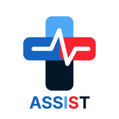

Historial
Proyectos recientes
Una selección de lo que vengo trabajando en Seeker Parking, en la facultad y por mi cuenta.

Diseño app gestión de emergencias
Proyecto final de UX/UI: app móvil de gestión de emergencias, con mapas de empatía, customer journey maps y benchmarking competitivo.

Migración CodeIgniter a Laravel
Migración del módulo de Control de Ingreso de Seeker Parking desde CodeIgniter hacia una API REST en Laravel, con endpoints, migraciones y documentación en Swagger.
Sistema de Adopción de Mascotas
MVP del proceso de adopción de mascotas de punta a punta: prototipo en Figma y desarrollo funcional.